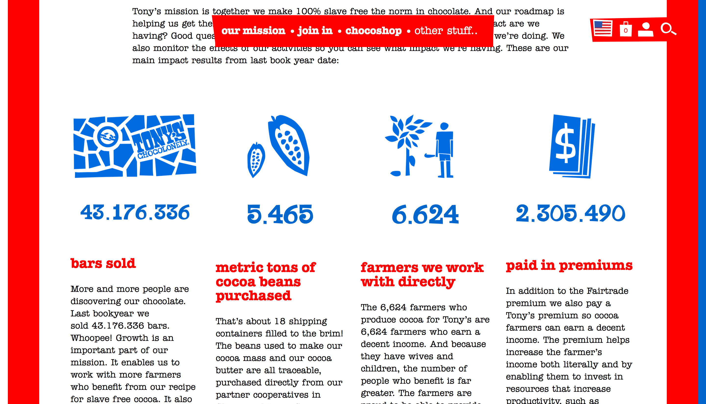
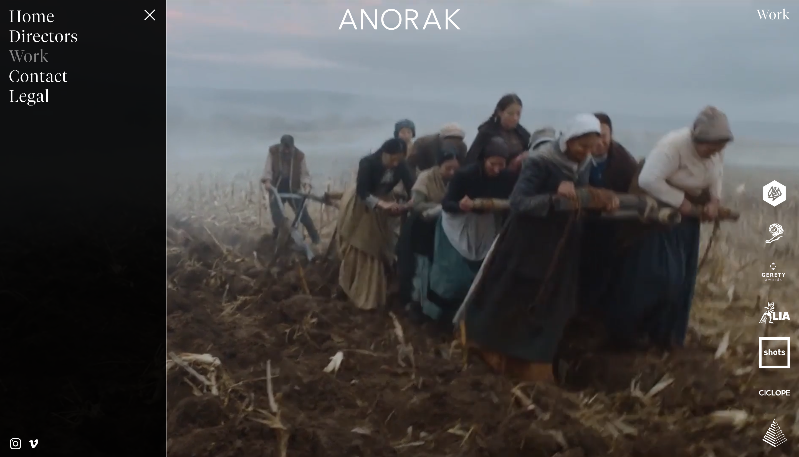

Homework
- 5 Page Narrative
- Bike SVG Animation
11/02: The first project is here! Based on Link from The Legend of Zelda and his look throughout the years. I plan on adding some CSS animations when I go back and revise it later.
Week 1: Cameron's World
Week 2: Tony's Chocolonely
Week 3: David Rudnick

Week 4: FORGE
Week 6 1/2: Simbòlic

Week 6 2/2: Henrik Russbander
Week 8: ANORAK